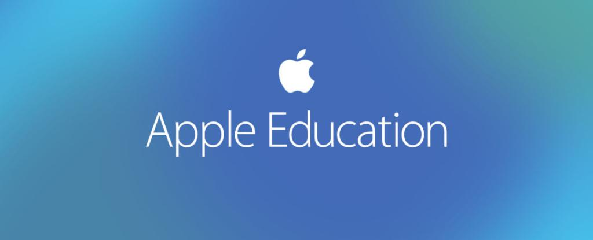
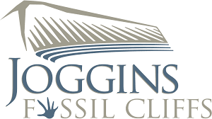
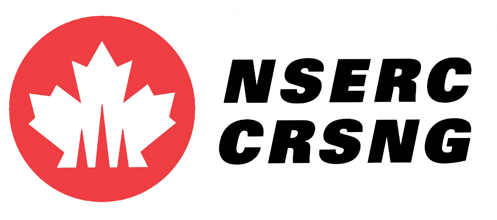

Nathan Rowbottom
Past Notable Awards / Achievments
- 2001: National Science and Engineering Research Council Undergraduate Research Grant
- Statisitical Properties of Galactic Dark Matter Haloes
- 2002: National Science and Engineering Research Council Undergraduate Research Grant
- Group Renormalization Methods to Model High Temperature Superconducting Materials
- 2008: Halton District School Board Science / Math Professional Develoment Presenter
- Using Scientific Sensors to Support Real World Math
- 2009: Halton District School Board Science Professional Develoment Presenter
- Using Sensors to Conduct Scientific Inquiry
- 2010: Halton District School Board Science / Math Professional Development Presenter
- Using Sensors to Support Inquiry-Based Learning
- 2012: Halton District School Board Science / Math Professional Develoment Presenter
- Supporting Realworld Mathematical Inquiry
- 2012 Deep River Nuclear Institute Teacher Collaborator
- Investigation of Nanoplatforms Using Neutron Diffraction
- 2014 Halton District School Board Innovation Grant Recipent
- Adding Solar Panels Hands On Activities to Grade 9 Science Electricity Unit
- 2015 Halton District School Board Computer Studies Professional Development Presenter
- Using Project-Based Learning to Inspire Students
- 2015-2017 Creator: Halton Hackathon
- Organized multiple schools to come together and program solutons to teacher submitted requests for educational apps.
- 2016 Apple Canada Teacher Innovator
- Selected to Teach App Development Program
- 2016 University of Waterloo CEMC (Centre for Edcuation in Mathematics and Computer Science)
- Member of a Working Group to Develop a Quality Python Introductory Computer Science Course
- 2016 Speaker at the Halton Information Network (HALINET) Conference :
- Increasing Diversity in Programming Courses
- 2016 Halton District School Board Computer Studies Professional Development Presenter
- Using Agent-Based Programming Challenges in Grade 12 Comp Sci
- 2017 Halton District School Board Computer Studies Professional Development Presenter
- Platform and Language Agnostism as a Way of Building Programming Flexibility In Computer Science Courses
- 2018 Weather Channel Video Vignette
- 2018 Halton District School Board Computer Studies Professional Development Presenter
- Implementing Software Development Methodologies and Practices into the Classroom
- 2018 Speaker at Fundy Geological Society Conference
- Machine Learning Apps to Engage Citizen Scientists
- 2018 Halton District School Board Innovation Grant Recipent
- Using Custom Apps to Improve Feedback and Reflection
- 2017-2019 Teacher Lead for Halton App Development Specialist High Skills Major Program
- 2019 Halton District School Board Computer Studies Professional Development Presenter
- Incorporating Machine Learning into the Classroom
- 2019 - Present Information and Communication Technology Council of Canada (ICTC) Champion
- 2019 Speaker at the Internation Conference for Indigenous Language
- Developing Custom Machine Learning Translation Models to Support Indigenous Languages
- 2019-Present Amazon Web Sevices Educate Ambassador
- 2019 Google Classroom Beta Tester
- 2019 Speaker at the Internation Conference for Indigenous Language:
- Experiences in Developing Custom Machine Learning Translation Models
- 2020-Present IBM P-TECH (Pathways in Technology Early College in Highschool Lead Teacher
- Principal Highschool Instructor for all PTECH Dual Credit Courses.
- 2020-Present University of Waterloo CEMC (Centre for Edcuation in Mathematics and Computer Science)
- Member of a Working Group to Indignenize Mathematics and Computer Science Education
- 2020-Present FlowH2O Beta Tester
- 2021-2022 Ontario Ministry of Education Virtual Learning Support Grant
- Collaboration with the Six Nation Polytechnic and the Indigenous Knowledge Centre to create a Virtual Reality Longhouse Experience.



